What this actually is
Most "Linux ricing" projects are a colour scheme and a config file. This is a desktop environment. Hyprland handles the windows; everything you can see or click — the bar, the menus, the widgets, the lock screen, the settings app, the music player, the notifications — is one Quickshell program written for this machine, in QML and GLSL.
It is one shell process. The bar, the lock screen and the Settings window are not three apps that agree on a palette — they are three surfaces of the same running program, so they cannot drift out of sync.
If you've never seen a desktop like this, here's the short version
- The wallpaper is running code. The background is a GLSL shader drawing a star-field and cloud layers in real time, not a JPEG.
- The bar is painted by fluid dynamics. A Navier–Stokes solver runs continuously and its output is the bar's texture — it visibly rolls and curls even when nothing is happening.
- It listens to your music. A Python engine reads the audio stream, predicts where the beat lands, and drives the analyser, the window borders and the lock-screen glow from it.
- One settings app for everything. 46 pages covering appearance, network, audio, power, hotkeys, wallpapers and more — searchable, with live previews.
- Two complete looks. ICE (glacier cyan and plum) and MAGMA (ember gold and crust) — one key in one JSON file swaps the whole desktop.
bin/ for wallpapers, updates, hardware profiles, media, captureTwo looks, one switch
ICE is glacier cyan over plum. MAGMA is ember gold over a dark crust. This is
not a hue rotation — the palettes, the gradients, the icon treatments, the bar's
fluid tint and the window border colours are all defined separately. Flipping
look_set in ~/.config/nyxus/settings.json repaints the
running desktop in about two seconds. No logout, no restart.
The switch, live. A single unedited take. The widgets, the bar's fluid texture, the icon glows and the calendar accents all cross over together. Recorded with music paused so the analyser and lyrics don't distract.
The same surfaces, side by side
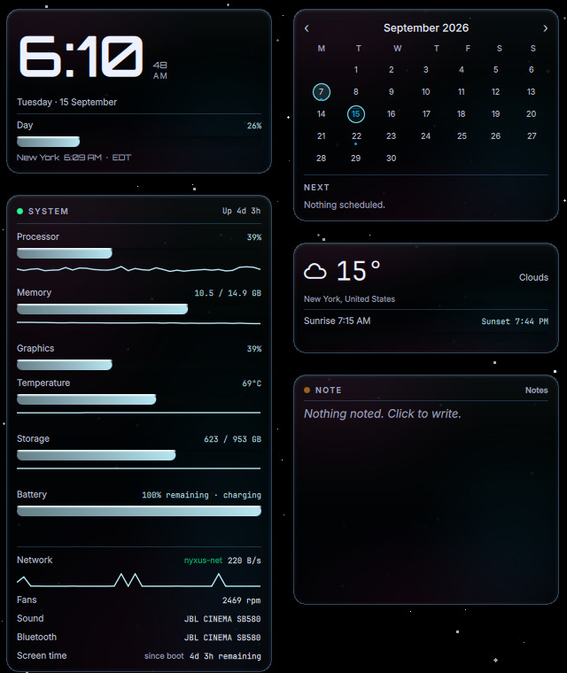
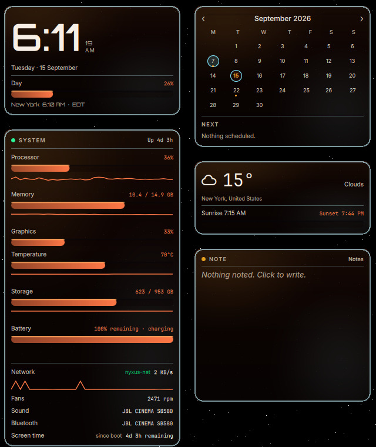
Widgets, both looks. Clock, calendar, live system monitor, weather and a notes pad. Same layout, same data, entirely different material. Note the meter bars, the sparkline and the date ring all recolour — these are themed components, not tinted images.
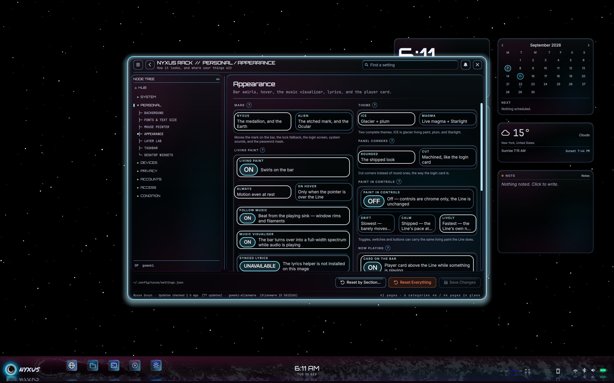
Where the switch lives. Settings → Appearance. Two cards — "Glacier + plum" and "Live magma + Starlight" — and the desktop follows immediately.
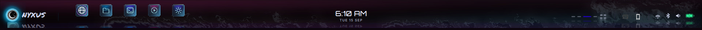
The bar, close up. Launcher, pinned apps, workspace pips, clock, tray and media readout. The cloud texture behind it is the fluid simulation, tinted by the current look.
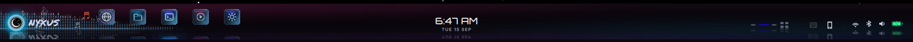
The analyser spans the whole bar while music plays.
The sky is a shader
The desktop background is a GLSL program, not an image. It draws a drifting star-field with parallax layers and soft nebula banding, and it keeps moving whether or not anything is focused. Because it is generated, it costs a few kilobytes rather than a few megabytes, and it can be tinted by the current look instead of needing two wallpapers.
A full desktop, untouched. The widget stack on the right is always available; the bar runs the width of the screen. There are 43 hand-made wallpapers in the repo as well, and the picker unions three directories to offer 56 on the live machine — but the default surface is the shader.
The bar is alive
The texture behind the bar is a real fluid simulation — a Navier–Stokes solver running every frame, advecting dye through a velocity field. It is never a loop and never a video. Left alone with no music playing, it still rolls, folds and curls. It is the single most-seen surface in the desktop, so it was given the most expensive treatment.
Idle, with music paused. Nothing is driving this but the solver. Recorded in the MAGMA look, where the motion reads most clearly; the ICE look runs the same simulation in cyan and plum.
It moves to the music
A Python engine reads the audio stream from PipeWire, runs an FFT, and — rather than just reacting late — predicts where the next beat lands so the visuals can hit on time instead of trailing. That one signal drives three different surfaces.
Music-reactive window borders. The focused window's rim is driven
by the beat engine — Hyprland's border gradient is rewritten live. Measured on this
clip, the rim's brightness swings about 15% peak-to-trough
(pixel mean 329 → 388 on a 0–1000 scale), which I cross-checked against the
compositor's own reported colour moving between fff4bd6e and
fffddfa8. It is a pulse, not a strobe — noticeable in motion, subtle
in a still.
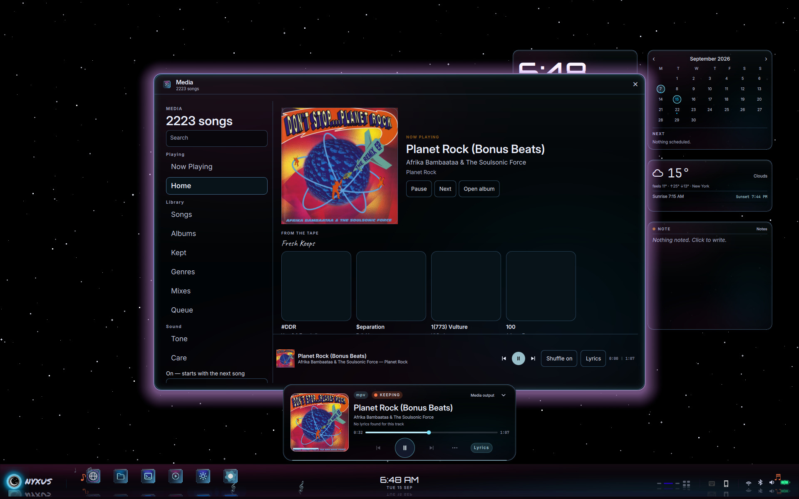
The player. Album art, transport, queue and timed lyrics, built into the shell rather than shelled out to another app.
The analyser renders the engine's spectrum across the bar. The bar's media readout also scrolls synchronised lyrics when a track supplies them.
The surfaces you use
Everything below is part of the same shell process. None of it is a separate application that had to be themed into agreement.
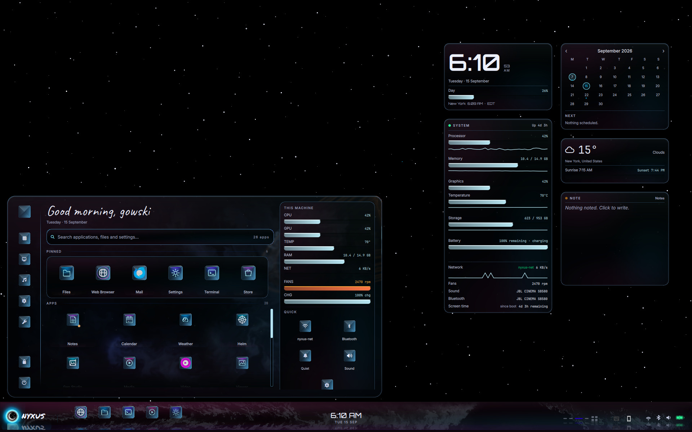
Launcher. Fuzzy search across applications, with keyboard-first navigation. Opens on the focused monitor.
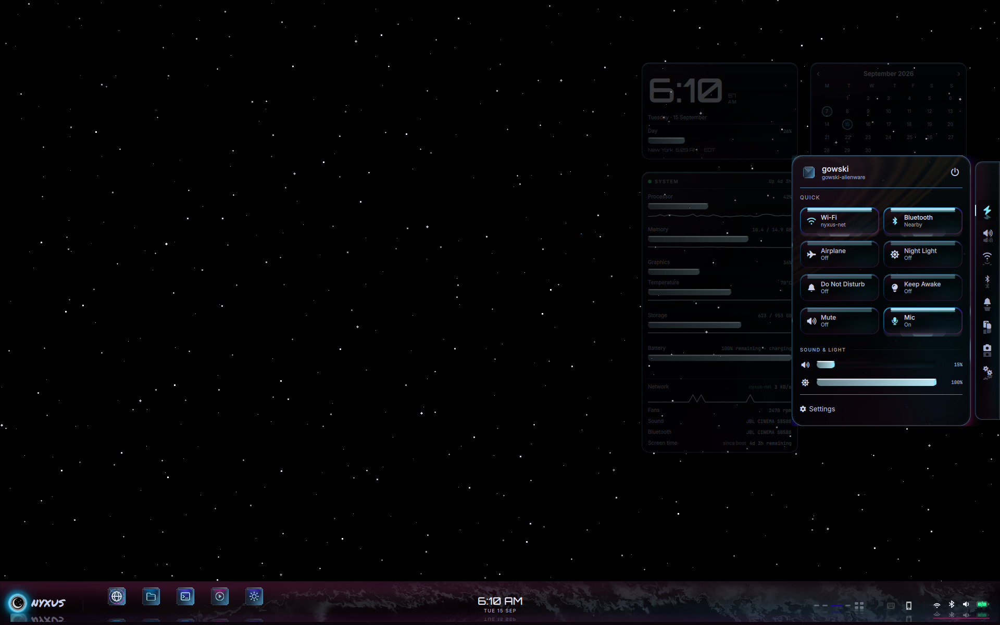
Quick settings flyout. Wi-Fi, Bluetooth, airplane mode, night light, do-not-disturb, mute, mic, and the sound and brightness sliders.
The flyout, in motion. It slides in and the widget stack behind it dims and blurs rather than simply being covered. Cropped to exclude the bar so the animation is the only thing moving.
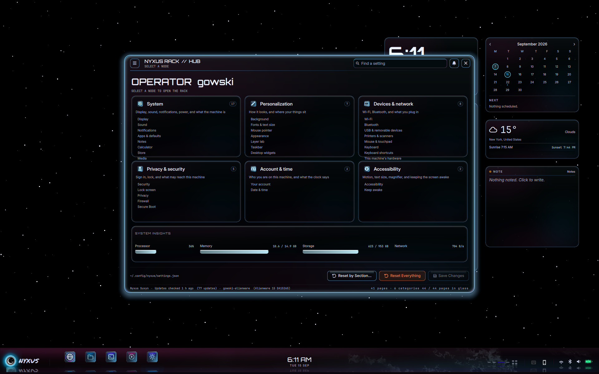
Settings. 46 pages behind a searchable catalogue of 44 linked nodes — appearance, network, audio, display, power, hotkeys, wallpapers, notifications and more.
Media. A full player surface, not a tray popup — artwork, scrubbing, queue and lyrics.
Lock screen and greeter
The lock screen draws a live Earth — real satellite imagery fetched on a schedule and rendered through a shader with a weather layer over it — behind a glass card carrying the clock, the date, the current track and the password field. The now-playing rim on that card glows on the beat, same engine as the window borders.
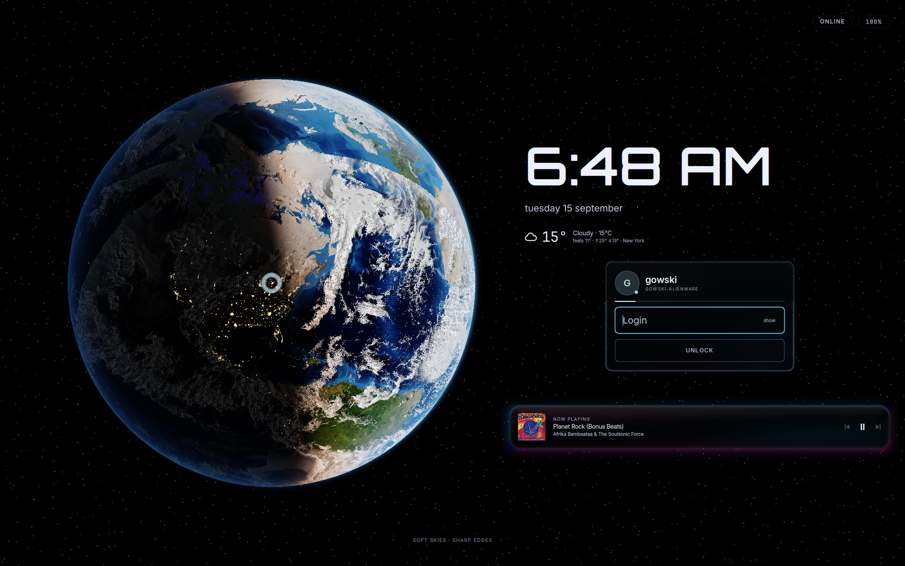
Locked. A live-rendered Earth turns behind a sheet of frosted glass, and the card, type and accents follow whichever look you are running.
Before you even log in
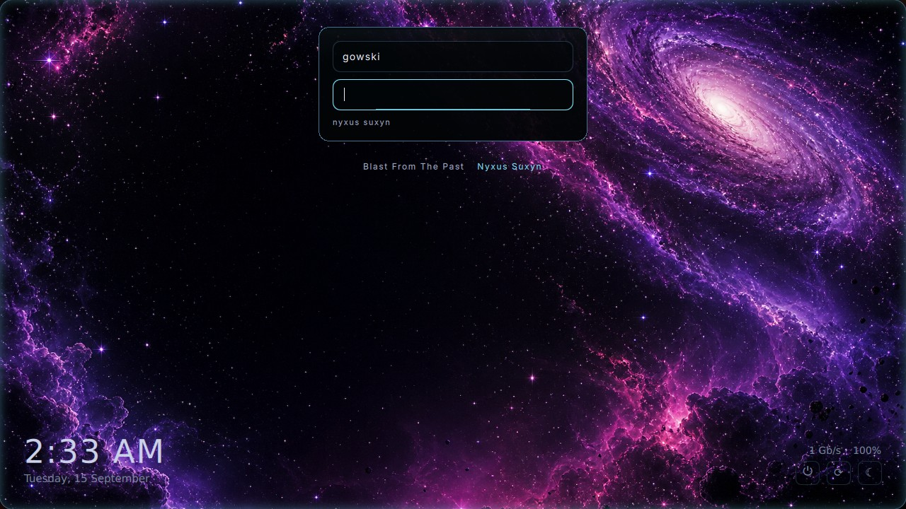
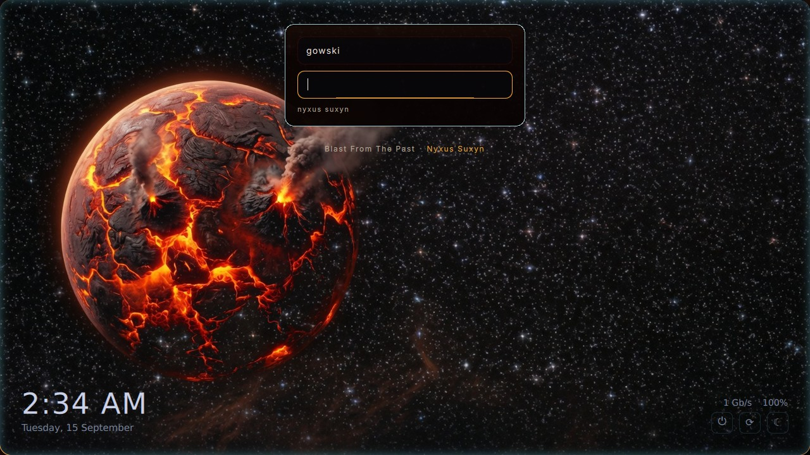
The greeter matches too. The look reaches the display manager, so the machine is themed from power-on rather than from login.
By the numbers
Every figure here was counted on the repository at the time this page was written, not estimated. Where my own count disagreed with earlier notes, the counted value is the one printed.
| QML source files | 210 (205 in the shell, 5 in the greeter) |
|---|---|
| Lines of QML | 92,738 |
| Shader sources | 33 (.frag / .vert) |
| Settings pages | 46 page components, 44 reachable from the catalogue |
Scripts in bin/ | 197, all executable |
| Wallpapers | 43 in the repo; 56 offered by the picker on a live install |
| Icons | 198 |
| Sound effects | 108 |
| Compositor | Hyprland on Wayland |
| Shell runtime | Quickshell (Qt 6 / QML) |
Getting it
Nyxus Suxyn targets Arch Linux with Hyprland and Quickshell. It is a full desktop, so it expects to own the session rather than sit alongside another shell.
git clone https://github.com/ikswognereisj-ctrl/Nyxus-Suxyn.git
cd Nyxus-Suxyn
# review first — this installs a whole desktop
less README.md
The shell lives in quickshell/, the compositor configuration in
hypr/, and the supporting tools in bin/. Switching the
look after install is one key:
# ~/.config/nyxus/settings.json
{ "look_set": "magma" } # or "ice"A few keys worth knowing
- Super — open the launcher
- Super + L — lock
- Super + Return — terminal
- Super + 1…9 — switch workspace
- Full, editable bindings live in Settings → Hotkeys